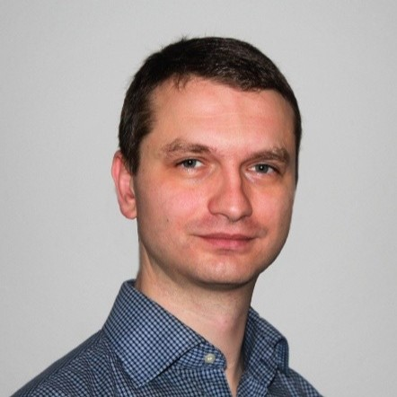

Dumitru Ghilenschi

OBJECTIVE STATEMENT
Motivated and detail-oriented web developer with a solid foundation in HTML, CSS, and JavaScript.
Seeking to apply my skills in building responsive and user-friendly websites while continuing to
grow expertise in modern frameworks and development practices. Eager to contribute to a collaborative
team environment and deliver effective digital solutions that enhance user experience.
Education
- 10.2015–05.2016 Linux Essentials
Nationaler Telekommunikationsbetreiber "Moldtelecom"
- 07.2013–05.2014 CCNA Routing and Switching
DNT Association bei Netacad
- 08.2012–09.2012 IAC IT Training forOperators
NIA, Korea, Seoul (Süd-Korea)
- 09.2000–06.2004 Lizentiat in der Informationstechnologie
Staatliche Universität Moldau
Work Experience
- Junior System and Network Administrator
Robotron Datenbank-Software GmbH
- IT service technician
- Technical Support Advisor
Concentrix Global Services GmbH
- 02.2017–01.2019 Technical advisor
Teleperformance Germany S. à r. l. & Co. KG
- 10.2015–02.2017 Network Operations Center Engineer
National telecommunications operator "Moldtelecom"
- 04.2008–10.2015 System engineer
State Information Resources Center ”Registru”
- 05.2007–11.2007 System engineer
- 10.2005–02.2007 Developer
State University of Moldova
- Marketing agent
State Information Agency “Moldpres”
SKILLS
- Direct customer contact within the framework of IT services, including the technical support of hardware, software and related additional services, such as warranty extentions, pre-sales service, inbound complaint regulation via all defined communication channels
- Manage services and Core Network operations, monitoring and configuration of equipments from CDMA-450 and UMTS / LTE (SGSN, GGSN, PDSN) network.
- Configuration and troubleshooting switches, routers, DWDM
- Open source monitoring: experience with Cacti, Zabbix
- System adminstration, Polycom Videoconferences
About me
Contact me